(up to last 14 days)
Daily view
Last update: 19 May 2026, 00:08 CEST
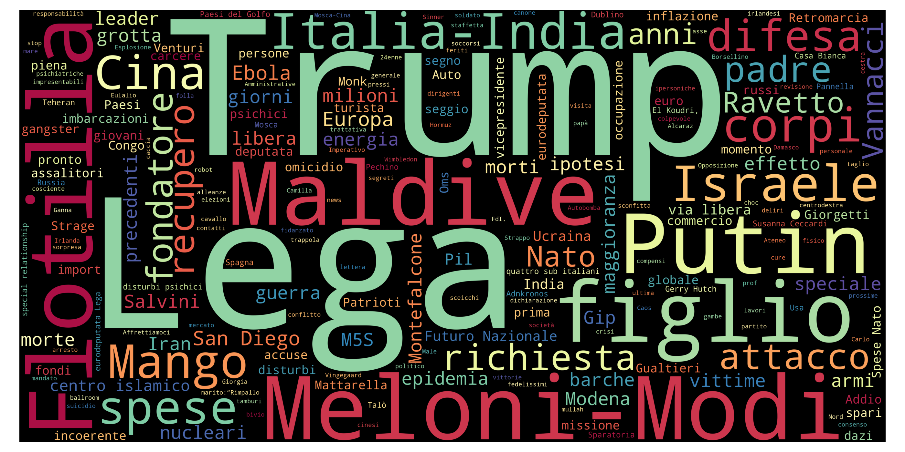
| Term | Frequency |
|---|---|
| recupero | 1 |
| disperso | 1 |
| maldive | 1 |
| corpo | 1 |
| mercoledì | 1 |
No phrases found for this day.
No new terms compared to previous day.
No significantly increasing terms.
| Term | Difference | Current day frequency | Previous day frequency |
|---|---|---|---|
| corpo | -7 | 1 | 8 |
| maldive | -7 | 1 | 8 |
| recupero | -4 | 1 | 5 |
| disperso | -2 | 1 | 3 |
| mercoledì | -2 | 1 | 3 |
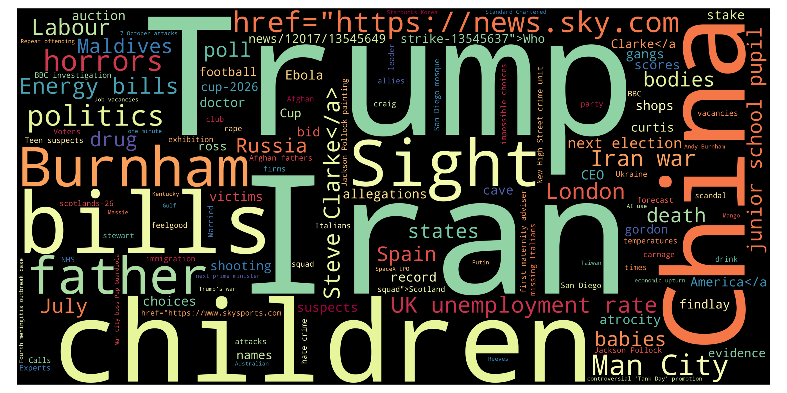
| Term | Frequency |
|---|---|
| musk | 2 |
| jury | 2 |
| openai | 2 |
| husband | 1 |
| bride | 1 |
| screen | 1 |
| road | 1 |
| hazard | 1 |
| 57bn | 1 |
| Term | Frequency |
|---|---|
| openai court battle | 2 |
| Term | Current day frequency |
|---|---|
| openai court battle | 2 |
| musk | 2 |
| road | 1 |
| hazard | 1 |
| 57bn | 1 |
No significantly increasing terms.
| Term | Difference | Current day frequency | Previous day frequency |
|---|---|---|---|
| openai | -3 | 2 | 5 |
| bride | -1 | 1 | 2 |
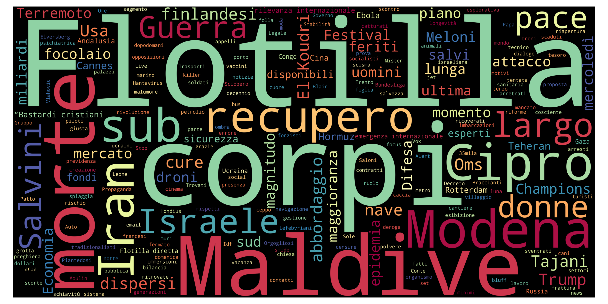
| Term | Frequency |
|---|---|
| flotilla | 9 |
| corpo | 8 |
| maldive | 8 |
| iran | 7 |
| usa | 6 |
| trump | 5 |
| morto | 5 |
| recupero | 5 |
| modena | 5 |
| israele | 5 |
| Term | Frequency |
|---|---|
| stati uniti | 2 |
| rilevanza internazionale | 2 |
| emergenza internazionale | 2 |
| donne morte | 2 |
| el koudri | 2 |
| flotilla diretta | 2 |
| Term | Current day frequency |
|---|---|
| flotilla | 9 |
| israele | 5 |
| mercoledì | 3 |
| nave | 3 |
| disperso | 3 |
| salvo | 2 |
| europa | 2 |
| gaza | 2 |
| proposta | 2 |
| magnitudo | 2 |
| Term | Difference | Current day frequency | Previous day frequency |
|---|---|---|---|
| corpo | 6 | 8 | 2 |
| usa | 4 | 6 | 2 |
| recupero | 4 | 5 | 1 |
| sub | 3 | 4 | 1 |
| cura | 2 | 3 | 1 |
| guerra | 2 | 3 | 1 |
| iran | 2 | 7 | 5 |
| ebola | 1 | 2 | 1 |
| deroga | 1 | 2 | 1 |
| mercato | 1 | 2 | 1 |
| Term | Difference | Current day frequency | Previous day frequency |
|---|---|---|---|
| modena | -8 | 5 | 13 |
| meloni | -6 | 4 | 10 |
| drone | -3 | 2 | 5 |
| ferito | -3 | 2 | 5 |
| energia | -2 | 1 | 3 |
| auto | -2 | 1 | 3 |
| attacco | -1 | 2 | 3 |
| trump | -1 | 5 | 6 |
| champions | -1 | 2 | 3 |
| finlandese | -1 | 3 | 4 |
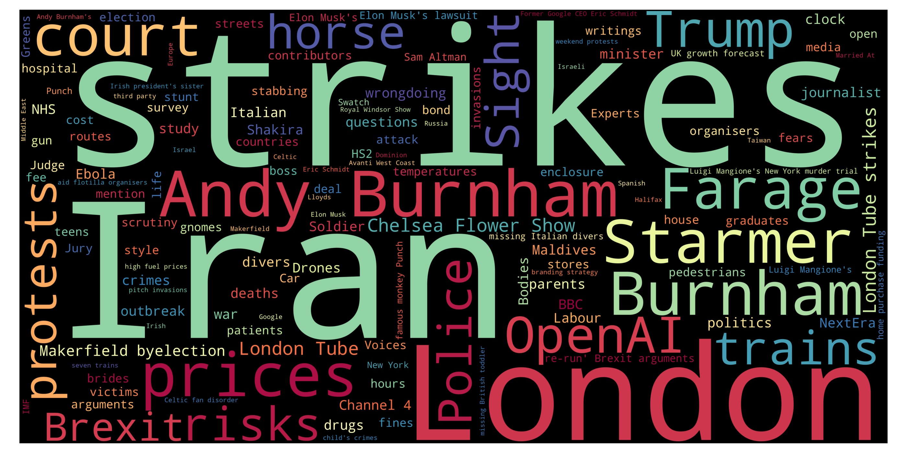
| Term | Frequency |
|---|---|
| strike | 9 |
| iran | 9 |
| london | 9 |
| price | 6 |
| burnham | 6 |
| starmer | 6 |
| farage | 5 |
| court | 5 |
| openai | 5 |
| trump | 5 |
| Term | Frequency |
|---|---|
| andy burnham | 7 |
| london tube | 4 |
| london tube strikes | 4 |
| makerfield byelection | 4 |
| channel 4 | 3 |
| run brexit arguments | 2 |
| elon musks | 2 |
| sam altman | 2 |
| elon musk lawsuit | 2 |
| missing italian divers | 2 |
| Term | Current day frequency |
|---|---|
| strike | 9 |
| andy burnham | 7 |
| price | 6 |
| court | 5 |
| openai | 5 |
| farage | 5 |
| horse | 4 |
| sight | 4 |
| police | 4 |
| train | 4 |
| Term | Difference | Current day frequency | Previous day frequency |
|---|---|---|---|
| starmer | 4 | 6 | 2 |
| iran | 4 | 9 | 5 |
| burnham | 3 | 6 | 3 |
| trump | 3 | 5 | 2 |
| risk | 3 | 4 | 1 |
| politic | 2 | 3 | 1 |
| clock | 2 | 3 | 1 |
| country | 1 | 2 | 1 |
| temperature | 1 | 2 | 1 |
| hour | 1 | 2 | 1 |
| Term | Difference | Current day frequency | Previous day frequency |
|---|---|---|---|
| time | -3 | 1 | 4 |
| arrest | -3 | 1 | 4 |
| celtic | -2 | 2 | 4 |
| labour | -2 | 3 | 5 |
| bid | -2 | 1 | 3 |
| russia | -1 | 2 | 3 |
| store | -1 | 2 | 3 |
| expert | -1 | 2 | 3 |
| light | -1 | 1 | 2 |
| record | -1 | 1 | 2 |
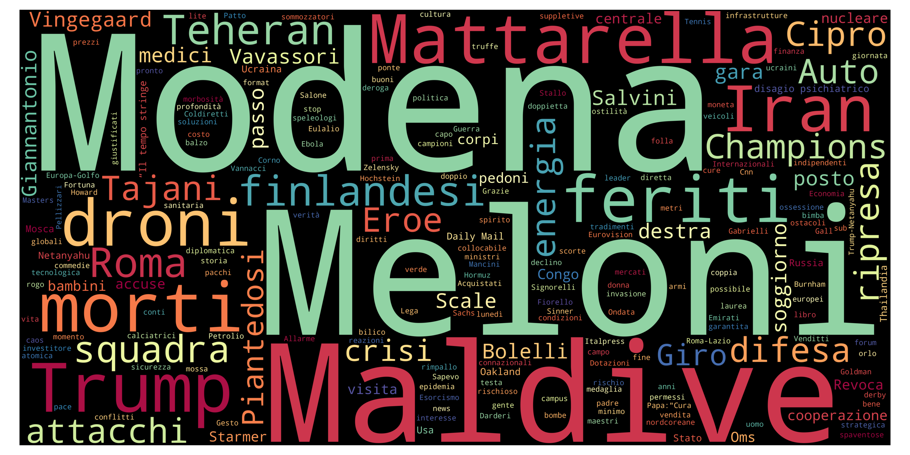
| Term | Frequency |
|---|---|
| modena | 13 |
| meloni | 10 |
| maldive | 7 |
| mattarella | 6 |
| trump | 6 |
| morto | 6 |
| ferito | 5 |
| drone | 5 |
| iran | 5 |
| finlandese | 4 |
| Term | Frequency |
|---|---|
| disagio psichiatrico | 2 |
| tempo stringe | 2 |
| daily mail | 2 |
| Term | Current day frequency |
|---|---|
| finlandese | 4 |
| teheran | 4 |
| roma | 4 |
| tajani | 3 |
| cipro | 3 |
| champions | 3 |
| energia | 3 |
| stato | 2 |
| russia | 2 |
| vavassori | 2 |
| Term | Difference | Current day frequency | Previous day frequency |
|---|---|---|---|
| modena | 8 | 13 | 5 |
| mattarella | 4 | 6 | 2 |
| ferito | 4 | 5 | 1 |
| drone | 4 | 5 | 1 |
| morto | 3 | 6 | 3 |
| auto | 2 | 3 | 1 |
| squadra | 2 | 3 | 1 |
| difesa | 2 | 3 | 1 |
| eroe | 1 | 2 | 1 |
| visita | 1 | 2 | 1 |
| Term | Difference | Current day frequency | Previous day frequency |
|---|---|---|---|
| sub | -7 | 1 | 8 |
| maldive | -6 | 7 | 13 |
| corpo | -5 | 2 | 7 |
| pronto | -5 | 1 | 6 |
| usa | -4 | 2 | 6 |
| hormuz | -3 | 1 | 4 |
| meloni | -3 | 10 | 13 |
| iran | -2 | 5 | 7 |
| trump | -1 | 6 | 7 |
| attacco | -1 | 3 | 4 |
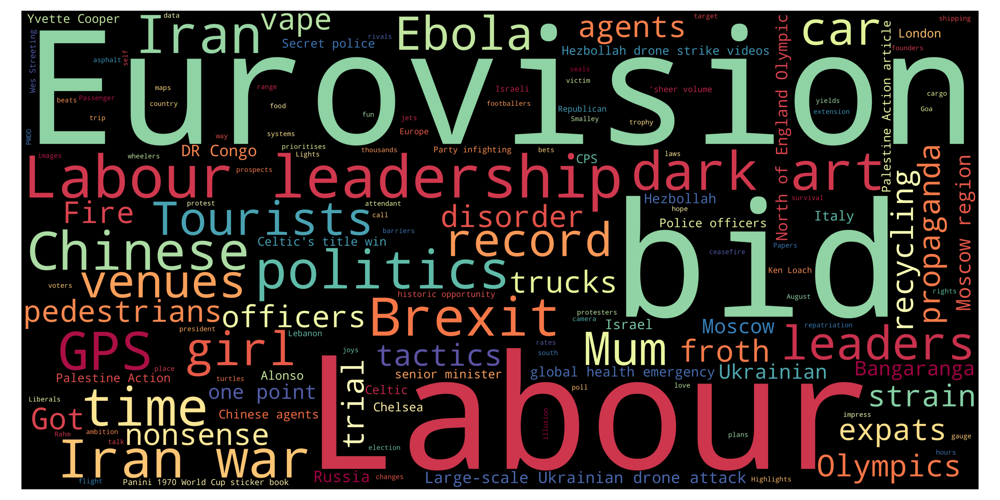
| Term | Frequency |
|---|---|
| london | 9 |
| officer | 6 |
| plan | 5 |
| iran | 5 |
| moscow | 5 |
| brexit | 5 |
| labour | 5 |
| eurovision | 4 |
| arrest | 4 |
| protest | 4 |
| Term | Frequency |
|---|---|
| dr congo | 3 |
| scott hastings | 3 |
| rival london protests | 3 |
| labour leadership | 3 |
| police chief | 3 |
| iran war | 3 |
| dark art | 3 |
| wes streeting | 3 |
| leadership contest | 2 |
| one point | 2 |
| Term | Current day frequency |
|---|---|
| officer | 6 |
| plan | 5 |
| moscow | 5 |
| iran | 5 |
| brexit | 5 |
| ukraine | 4 |
| time | 4 |
| eurovision | 4 |
| protest | 4 |
| olympics | 4 |
| Term | Difference | Current day frequency | Previous day frequency |
|---|---|---|---|
| store | 2 | 3 | 1 |
| celtic | 2 | 4 | 2 |
| arrest | 2 | 4 | 2 |
| bid | 2 | 3 | 1 |
| kingdom | 1 | 2 | 1 |
| change | 1 | 2 | 1 |
| camera | 1 | 2 | 1 |
| Term | Difference | Current day frequency | Previous day frequency |
|---|---|---|---|
| trump | -7 | 2 | 9 |
| london | -4 | 9 | 13 |
| italy | -3 | 2 | 5 |
| labour | -3 | 5 | 8 |
| pedestrian | -3 | 2 | 5 |
| march | -2 | 2 | 4 |
| hope | -2 | 1 | 3 |
| burnham | -2 | 3 | 5 |
| starmer | -2 | 2 | 4 |
| battle | -2 | 1 | 3 |
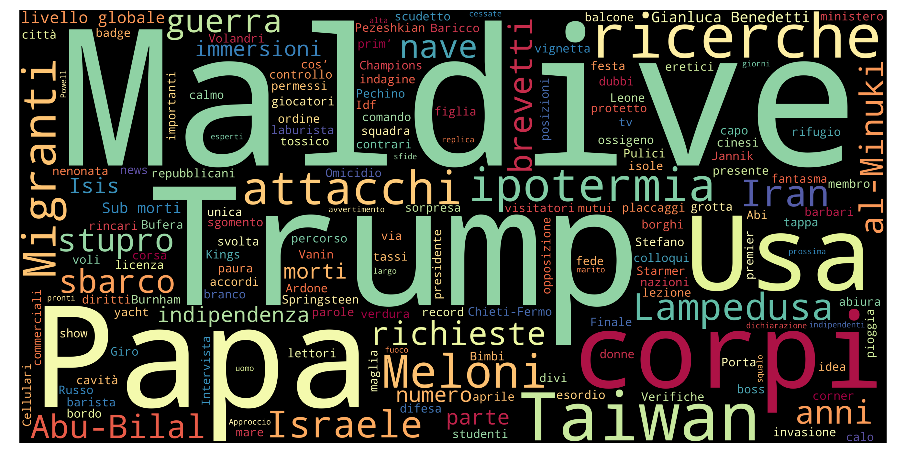
| Term | Frequency |
|---|---|
| meloni | 13 |
| maldive | 13 |
| sub | 8 |
| corpo | 7 |
| trump | 7 |
| iran | 7 |
| ricerca | 6 |
| pronto | 6 |
| usa | 6 |
| papa | 5 |
| Term | Frequency |
|---|---|
| europe gulf forum | 2 |
| europe gulf forum incontri mitsotakis abela christodoulidis | 2 |
| stretto di hormuz | 2 |
| navigazione sicura | 2 |
| Term | Current day frequency |
|---|---|
| meloni | 13 |
| sub | 8 |
| pronto | 6 |
| ricerca | 6 |
| modena | 5 |
| attacco | 4 |
| europa | 4 |
| hormuz | 4 |
| numero | 4 |
| isis | 3 |
| Term | Difference | Current day frequency | Previous day frequency |
|---|---|---|---|
| maldive | 6 | 13 | 7 |
| papa | 4 | 5 | 1 |
| corpo | 3 | 7 | 4 |
| mattarella | 1 | 2 | 1 |
| condizione | 1 | 2 | 1 |
| finale | 1 | 2 | 1 |
| giorno | 1 | 2 | 1 |
| modello | 1 | 2 | 1 |
| fiducia | 1 | 2 | 1 |
| colloquio | 1 | 2 | 1 |
| Term | Difference | Current day frequency | Previous day frequency |
|---|---|---|---|
| trump | -6 | 7 | 13 |
| pechino | -5 | 1 | 6 |
| anno | -5 | 2 | 7 |
| morto | -3 | 3 | 6 |
| futuro | -2 | 1 | 3 |
| operazione | -2 | 1 | 3 |
| accordo | -2 | 2 | 4 |
| emirato | -1 | 1 | 2 |
| stupro | -1 | 1 | 2 |
| drone | -1 | 1 | 2 |
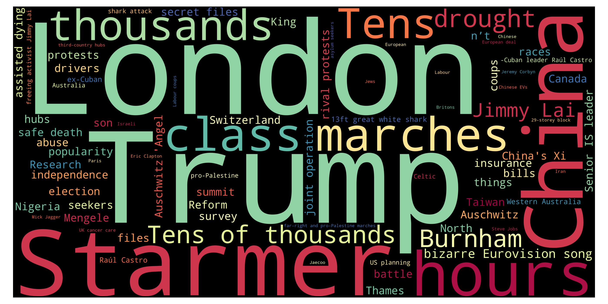
| Term | Frequency |
|---|---|
| london | 13 |
| trump | 9 |
| labour | 8 |
| thousand | 6 |
| ten | 6 |
| pedestrian | 5 |
| soldier | 5 |
| burnham | 5 |
| italy | 5 |
| march | 4 |
| Term | Frequency |
|---|---|
| tens thousands | 6 |
| leadership race | 4 |
| wes streeting | 4 |
| royal windsor horse | 3 |
| east london | 3 |
| maldives caves | 2 |
| rescue diver | 2 |
| trump warning | 2 |
| safe death | 2 |
| assisted dying | 2 |
| Term | Current day frequency |
|---|---|
| ten | 6 |
| tens thousands | 6 |
| thousand | 6 |
| italy | 5 |
| soldier | 5 |
| pedestrian | 5 |
| leadership race | 4 |
| march | 4 |
| chelsea | 4 |
| alonso | 4 |
| Term | Difference | Current day frequency | Previous day frequency |
|---|---|---|---|
| london | 8 | 13 | 5 |
| hope | 2 | 3 | 1 |
| battle | 2 | 3 | 1 |
| italians | 1 | 3 | 2 |
| trump | 1 | 9 | 8 |
| north | 1 | 2 | 1 |
| Term | Difference | Current day frequency | Previous day frequency |
|---|---|---|---|
| burnham | -8 | 5 | 13 |
| cost | -4 | 1 | 5 |
| starmer | -4 | 4 | 8 |
| china | -4 | 2 | 6 |
| assault | -3 | 1 | 4 |
| andy burnham | -3 | 2 | 5 |
| talk | -3 | 1 | 4 |
| makerfield | -3 | 1 | 4 |
| reform | -2 | 2 | 4 |
| taiwan | -2 | 2 | 4 |
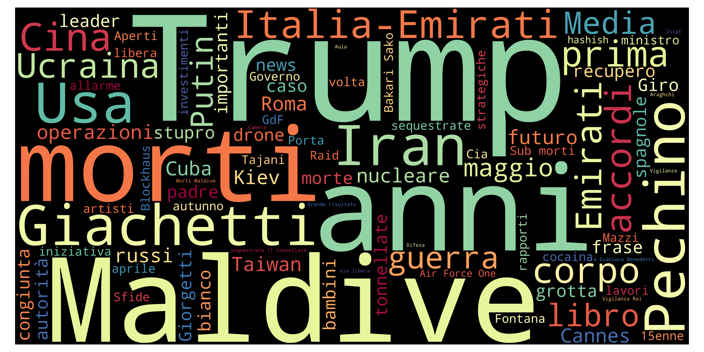
| Term | Frequency |
|---|---|
| trump | 13 |
| anno | 7 |
| maldive | 7 |
| morto | 6 |
| giachetti | 6 |
| pechino | 6 |
| usa | 6 |
| iran | 6 |
| cina | 5 |
| primo | 4 |
| Term | Frequency |
|---|---|
| sub morti | 2 |
| bakari sako | 2 |
| air force one | 2 |
| sequestrate tonnellate | 2 |
| gianluca benedetti | 2 |
| vigilanza rai | 2 |
| morti maldive | 2 |
| grande risultato | 2 |
| via libera | 2 |
| italia emirati | 2 |
| Term | Current day frequency |
|---|---|
| trump | 13 |
| morto | 6 |
| giachetti | 6 |
| corpo | 4 |
| italia-emirato | 3 |
| futuro | 3 |
| roma | 3 |
| maggio | 3 |
| putin | 3 |
| operazione | 3 |
| Term | Difference | Current day frequency | Previous day frequency |
|---|---|---|---|
| iran | 4 | 6 | 2 |
| anno | 3 | 7 | 4 |
| accordo | 2 | 4 | 2 |
| russo | 2 | 3 | 1 |
| ucraina | 2 | 4 | 2 |
| primo | 2 | 4 | 2 |
| libro | 1 | 3 | 2 |
| porta | 1 | 2 | 1 |
| pechino | 1 | 6 | 5 |
| bambino | 1 | 2 | 1 |
| Term | Difference | Current day frequency | Previous day frequency |
|---|---|---|---|
| trump-xi | -4 | 1 | 5 |
| maldive | -3 | 7 | 10 |
| vittima | -3 | 1 | 4 |
| grotta | -2 | 2 | 4 |
| governo | -2 | 2 | 4 |
| visita | -2 | 1 | 3 |
| drone | -2 | 2 | 4 |
| sfida | -2 | 1 | 3 |
| taiwan | -2 | 3 | 5 |
| profondità | -2 | 1 | 3 |
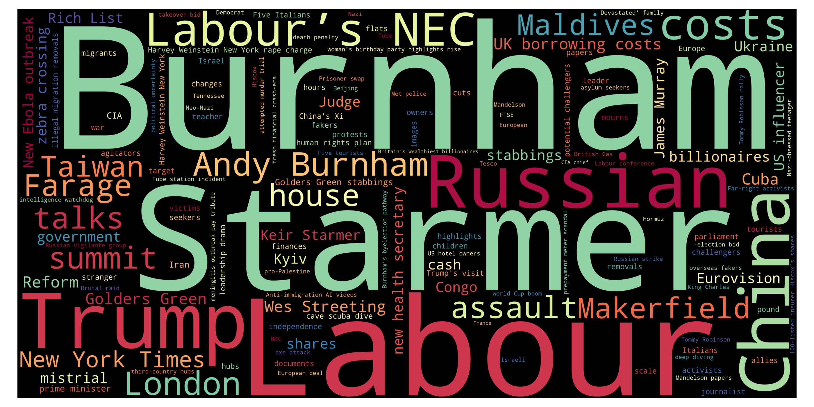
| Term | Frequency |
|---|---|
| burnham | 13 |
| starmer | 8 |
| labour | 8 |
| trump | 8 |
| russian | 7 |
| china | 6 |
| cost | 5 |
| london | 5 |
| summit | 4 |
| farage | 4 |
| Term | Frequency |
|---|---|
| andy burnham | 5 |
| borrowing costs | 4 |
| wes streeting | 4 |
| golders green | 4 |
| rich list | 3 |
| keir starmer | 3 |
| health secretary | 3 |
| james murray | 3 |
| zebra crossing | 3 |
| us influencer | 3 |
| Term | Current day frequency |
|---|---|
| cost | 5 |
| farage | 4 |
| maldives | 4 |
| borrowing costs | 4 |
| reform | 4 |
| talk | 4 |
| judge | 3 |
| labour nec | 3 |
| ebola outbreak | 3 |
| james murray | 3 |
| Term | Difference | Current day frequency | Previous day frequency |
|---|---|---|---|
| burnham | 5 | 13 | 8 |
| russian | 4 | 7 | 3 |
| house | 3 | 4 | 1 |
| assault | 3 | 4 | 1 |
| london | 3 | 5 | 2 |
| summit | 3 | 4 | 1 |
| stabbing | 2 | 3 | 1 |
| cuba | 2 | 4 | 2 |
| cash | 2 | 3 | 1 |
| share | 2 | 3 | 1 |
| Term | Difference | Current day frequency | Previous day frequency |
|---|---|---|---|
| victim | -8 | 2 | 10 |
| starmer | -8 | 8 | 16 |
| court | -7 | 1 | 8 |
| labour | -6 | 8 | 14 |
| iran | -5 | 3 | 8 |
| china | -3 | 6 | 9 |
| child | -2 | 2 | 4 |
| wes streeting | -2 | 4 | 6 |
| prison | -1 | 1 | 2 |
| night | -1 | 1 | 2 |
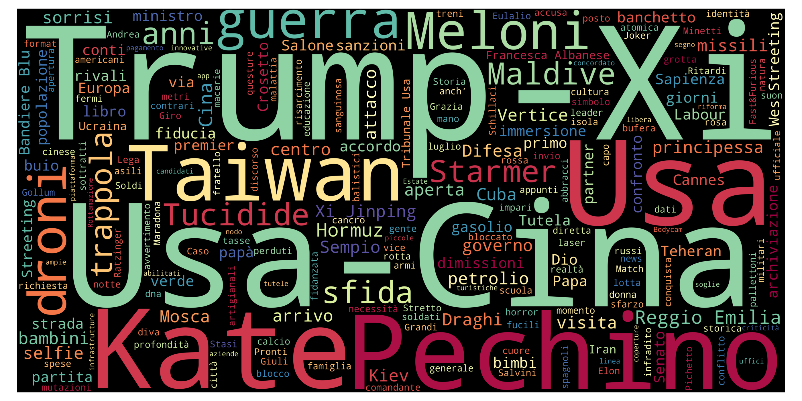
| Term | Frequency |
|---|---|
| maldive | 10 |
| usa-cina | 6 |
| usa | 6 |
| immersione | 5 |
| meloni | 5 |
| trump-xi | 5 |
| pechino | 5 |
| taiwan | 5 |
| hormuz | 5 |
| vittima | 4 |
| Term | Frequency |
|---|---|
| xi jinping | 3 |
| davide ballerini | 2 |
| forza italia | 2 |
| trump xi | 2 |
| wes streeting | 2 |
| francesca albanese | 2 |
| tribunale usa | 2 |
| reggio emilia | 2 |
| Term | Current day frequency |
|---|---|
| maldive | 10 |
| taiwan | 5 |
| immersione | 5 |
| grotta | 4 |
| trappola | 4 |
| tucidide | 4 |
| vittima | 4 |
| attacco | 4 |
| metro | 3 |
| kate | 3 |
| Term | Difference | Current day frequency | Previous day frequency |
|---|---|---|---|
| usa-cina | 5 | 6 | 1 |
| trump-xi | 4 | 5 | 1 |
| vertice | 3 | 4 | 1 |
| usa | 3 | 6 | 3 |
| drone | 2 | 4 | 2 |
| aperto | 2 | 3 | 1 |
| visita | 2 | 3 | 1 |
| sempio | 2 | 3 | 1 |
| hormuz | 2 | 5 | 3 |
| europa | 1 | 2 | 1 |
| Term | Difference | Current day frequency | Previous day frequency |
|---|---|---|---|
| nave | -5 | 1 | 6 |
| discorso | -4 | 1 | 5 |
| caso | -4 | 1 | 5 |
| meloni | -4 | 5 | 9 |
| reggio emilia | -3 | 2 | 5 |
| senato | -2 | 2 | 4 |
| iran | -2 | 2 | 4 |
| donna | -2 | 1 | 3 |
| look | -2 | 1 | 3 |
| hantavirus | -2 | 1 | 3 |
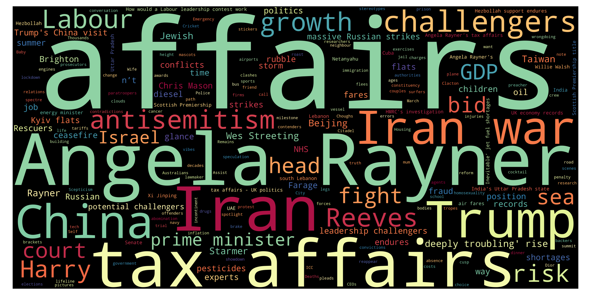
| Term | Frequency |
|---|---|
| starmer | 16 |
| labour | 14 |
| victim | 10 |
| china | 9 |
| court | 8 |
| iran | 8 |
| trump | 8 |
| burnham | 8 |
| king | 6 |
| hmrc | 5 |
| Term | Frequency |
|---|---|
| angela rayner | 6 |
| wes streeting | 6 |
| prime minister | 4 |
| golders green | 4 |
| labour leadership contest | 4 |
| andy burnham | 4 |
| record global temperatures | 3 |
| el niño | 3 |
| keir starmer | 3 |
| brighton beach | 3 |
| Term | Current day frequency |
|---|---|
| victim | 10 |
| court | 8 |
| king | 6 |
| angela rayner | 6 |
| hmrc | 5 |
| brexit | 4 |
| andy burnham | 4 |
| golders green | 4 |
| prime minister | 4 |
| labour leadership contest | 4 |
| Term | Difference | Current day frequency | Previous day frequency |
|---|---|---|---|
| labour | 5 | 14 | 9 |
| burnham | 5 | 8 | 3 |
| police | 3 | 5 | 2 |
| iran | 3 | 8 | 5 |
| temperature | 2 | 4 | 2 |
| prisoner | 2 | 3 | 1 |
| life | 2 | 4 | 2 |
| starmer | 2 | 16 | 14 |
| decade | 2 | 3 | 1 |
| beijing | 1 | 3 | 2 |
| Term | Difference | Current day frequency | Previous day frequency |
|---|---|---|---|
| parliament | -3 | 1 | 4 |
| crypto billionaire | -3 | 2 | 5 |
| ukraine | -3 | 2 | 5 |
| london | -3 | 2 | 5 |
| conviction | -3 | 1 | 4 |
| march | -2 | 1 | 3 |
| nigel farage | -2 | 2 | 4 |
| bbc | -2 | 2 | 4 |
| rival | -1 | 1 | 2 |
| stake | -1 | 1 | 2 |
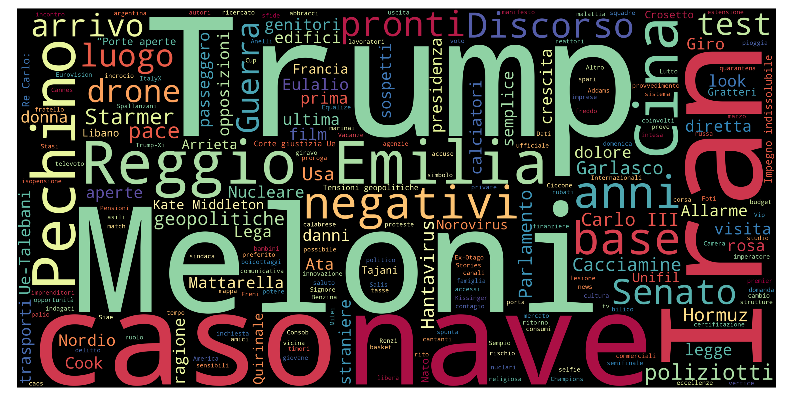
| Term | Frequency |
|---|---|
| trump | 10 |
| meloni | 9 |
| nave | 6 |
| caso | 5 |
| pronto | 5 |
| discorso | 5 |
| pechino | 5 |
| anno | 4 |
| cina | 4 |
| senato | 4 |
| Term | Frequency |
|---|---|
| reggio emilia | 5 |
| carlo iii | 3 |
| re carlo | 3 |
| kate middleton | 2 |
| impegno indissolubile | 2 |
| tensioni geopolitiche | 2 |
| corte giustizia ue | 2 |
| Term | Current day frequency |
|---|---|
| meloni | 9 |
| reggio emilia | 5 |
| discorso | 5 |
| pronto | 5 |
| pechino | 5 |
| senato | 4 |
| hormuz | 3 |
| look | 3 |
| geopolitico | 3 |
| arrivo | 3 |
| Term | Difference | Current day frequency | Previous day frequency |
|---|---|---|---|
| trump | 8 | 10 | 2 |
| nave | 4 | 6 | 2 |
| caso | 3 | 5 | 2 |
| nucleare | 2 | 3 | 1 |
| test | 2 | 3 | 1 |
| anno | 2 | 4 | 2 |
| base | 2 | 3 | 1 |
| allarme | 2 | 3 | 1 |
| negativo | 2 | 3 | 1 |
| unifil | 1 | 2 | 1 |
| Term | Difference | Current day frequency | Previous day frequency |
|---|---|---|---|
| ministero | -3 | 1 | 4 |
| spallanzani | -3 | 1 | 4 |
| hantavirus | -3 | 3 | 6 |
| infermiere | -2 | 1 | 3 |
| prezzo | -2 | 1 | 3 |
| editore | -2 | 1 | 3 |
| lega | -1 | 2 | 3 |
| rischio | -1 | 1 | 2 |
| eurovision | -1 | 1 | 2 |
| bene | -1 | 1 | 2 |
| Term | Frequency |
|---|---|
| starmer | 14 |
| china | 9 |
| labour | 9 |
| trump | 8 |
| gift | 6 |
| ally | 5 |
| london | 5 |
| iran | 5 |
| ukraine | 5 |
| warning | 4 |
| Term | Frequency |
|---|---|
| king speech | 15 |
| wes streeting | 7 |
| crypto billionaire | 5 |
| kings speech | 5 |
| nigel farage | 4 |
| alex murdaugh murder convictions | 3 |
| alex murdaughs | 3 |
| keir starmer | 3 |
| leadership crisis | 3 |
| cruise ship | 3 |
| Term | Current day frequency |
|---|---|
| gift | 6 |
| crypto billionaire | 5 |
| kings speech | 5 |
| car | 4 |
| parliament | 4 |
| nigel farage | 4 |
| warning | 4 |
| conviction | 4 |
| russia | 4 |
| study | 3 |
| Term | Difference | Current day frequency | Previous day frequency |
|---|---|---|---|
| king speech | 13 | 15 | 2 |
| china | 7 | 9 | 2 |
| trump | 4 | 8 | 4 |
| ally | 4 | 5 | 1 |
| london | 3 | 5 | 2 |
| change | 3 | 4 | 1 |
| wes streeting | 3 | 7 | 4 |
| job | 2 | 3 | 1 |
| bbc | 2 | 4 | 2 |
| chaos | 1 | 2 | 1 |
| Term | Difference | Current day frequency | Previous day frequency |
|---|---|---|---|
| starmer | -15 | 14 | 29 |
| risk | -5 | 1 | 6 |
| iran | -4 | 5 | 9 |
| cost | -3 | 3 | 6 |
| question | -3 | 1 | 4 |
| thousand | -3 | 1 | 4 |
| keir starmer | -3 | 3 | 6 |
| politic | -2 | 1 | 3 |
| challenger | -2 | 1 | 3 |
| attack | -2 | 1 | 3 |
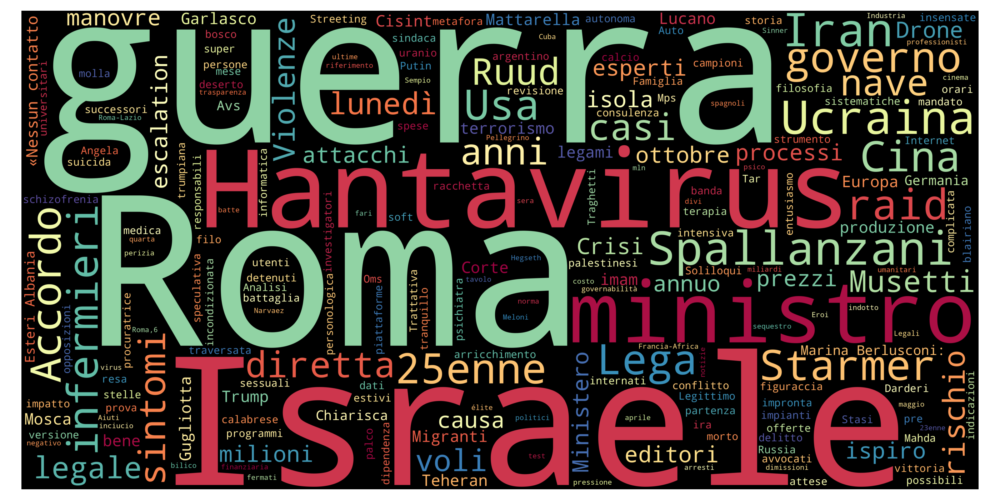
| Term | Frequency |
|---|---|
| israele | 6 |
| hantavirus | 6 |
| roma | 5 |
| ministero | 4 |
| cina | 4 |
| spallanzani | 4 |
| iran | 4 |
| guerra | 3 |
| editore | 3 |
| 25enne | 3 |
| Term | Frequency |
|---|---|
| regno unito | 2 |
| nessun contatto | 2 |
| marina berlusconi | 2 |
| accordo albania | 2 |
| Term | Current day frequency |
|---|---|
| israele | 6 |
| roma | 5 |
| cina | 4 |
| spallanzani | 4 |
| prezzo | 3 |
| famiglia | 3 |
| 25enne | 3 |
| lega | 3 |
| editore | 3 |
| infermiere | 3 |
| Term | Difference | Current day frequency | Previous day frequency |
|---|---|---|---|
| guerra | 2 | 3 | 1 |
| iran | 2 | 4 | 2 |
| legale | 2 | 3 | 1 |
| hantavirus | 2 | 6 | 4 |
| governo | 1 | 3 | 2 |
| ministero | 1 | 4 | 3 |
| medico | 1 | 2 | 1 |
| produzione | 1 | 2 | 1 |
| aiuto | 1 | 2 | 1 |
| attacco | 1 | 2 | 1 |
| Term | Difference | Current day frequency | Previous day frequency |
|---|---|---|---|
| usa | -3 | 3 | 6 |
| colono | -3 | 1 | 4 |
| sempio | -2 | 1 | 3 |
| fuoco | -2 | 1 | 3 |
| starmer | -2 | 2 | 4 |
| pellegrino | -2 | 1 | 3 |
| ultimo | -1 | 1 | 2 |
| crisi | -1 | 2 | 3 |
| delitto | -1 | 1 | 2 |
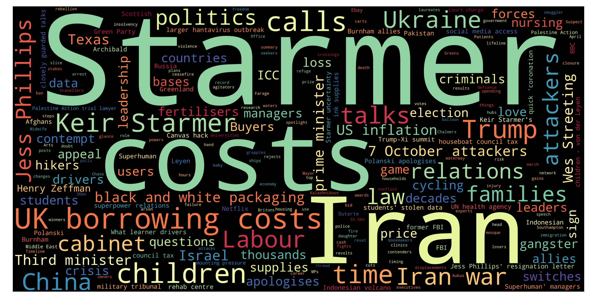
| Term | Frequency |
|---|---|
| starmer | 29 |
| call | 9 |
| labour | 9 |
| iran | 9 |
| time | 6 |
| cost | 6 |
| risk | 6 |
| israeli | 6 |
| question | 4 |
| thousand | 4 |
| Term | Frequency |
|---|---|
| keir starmer | 6 |
| prime minister | 6 |
| borrowing costs | 5 |
| labour mps | 4 |
| four ministers | 4 |
| wes streeting | 4 |
| iran war | 4 |
| potential challengers | 2 |
| ministers resignation letters | 2 |
| starmer fight | 2 |
| Term | Current day frequency |
|---|---|
| time | 6 |
| prime minister | 6 |
| keir starmer | 6 |
| israeli | 6 |
| borrowing costs | 5 |
| child | 4 |
| ukraine | 4 |
| four ministers | 4 |
| wes streeting | 4 |
| thousand | 4 |
| Term | Difference | Current day frequency | Previous day frequency |
|---|---|---|---|
| starmer | 11 | 29 | 18 |
| call | 4 | 9 | 5 |
| cost | 4 | 6 | 2 |
| risk | 3 | 6 | 3 |
| law | 2 | 3 | 1 |
| labour mps | 2 | 4 | 2 |
| question | 2 | 4 | 2 |
| buyer | 1 | 2 | 1 |
| head | 1 | 2 | 1 |
| weapon | 1 | 2 | 1 |
| Term | Difference | Current day frequency | Previous day frequency |
|---|---|---|---|
| trump | -7 | 4 | 11 |
| passenger | -6 | 1 | 7 |
| ship | -5 | 1 | 6 |
| rule | -3 | 1 | 4 |
| iran | -3 | 9 | 12 |
| premiership | -2 | 1 | 3 |
| fear | -2 | 1 | 3 |
| research | -2 | 1 | 3 |
| china | -2 | 2 | 4 |
| voter | -2 | 1 | 3 |
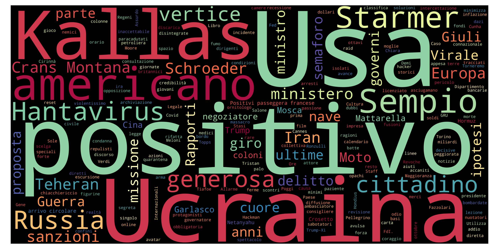
| Term | Frequency |
|---|---|
| positivo | 6 |
| usa | 6 |
| ucraina | 6 |
| giuli | 5 |
| sanzione | 5 |
| americano | 4 |
| meloni | 4 |
| colono | 4 |
| starmer | 4 |
| hantavirus | 4 |
| Term | Frequency |
|---|---|
| mv hondius | 2 |
| crans montana | 2 |
| positivi passeggera francese | 2 |
| arrivo circolare | 2 |
| Term | Current day frequency |
|---|---|
| positivo | 6 |
| sanzione | 5 |
| colono | 4 |
| kallas | 4 |
| americano | 4 |
| pellegrino | 3 |
| negoziatore | 3 |
| ministero | 3 |
| russia | 3 |
| cittadino | 3 |
| Term | Difference | Current day frequency | Previous day frequency |
|---|---|---|---|
| ucraina | 3 | 6 | 3 |
| fuoco | 2 | 3 | 1 |
| crisi | 2 | 3 | 1 |
| sempio | 2 | 3 | 1 |
| hantavirus | 2 | 4 | 2 |
| starmer | 2 | 4 | 2 |
| vertice | 2 | 3 | 1 |
| rischio | 1 | 2 | 1 |
| usa | 1 | 6 | 5 |
| giuli | 1 | 5 | 4 |
| Term | Difference | Current day frequency | Previous day frequency |
|---|---|---|---|
| nave | -8 | 2 | 10 |
| guerra | -6 | 1 | 7 |
| iran | -5 | 2 | 7 |
| trump | -2 | 2 | 4 |
| fine | -1 | 1 | 2 |
| milione | -1 | 1 | 2 |
| bordo | -1 | 1 | 2 |
| isolato | -1 | 1 | 2 |
| attentato | -1 | 2 | 3 |
| mosca | -1 | 3 | 4 |
| Term | Frequency |
|---|---|
| starmer | 18 |
| iran | 12 |
| trump | 11 |
| labour | 8 |
| passenger | 7 |
| ship | 6 |
| call | 5 |
| pupil | 4 |
| release | 4 |
| rule | 4 |
| Term | Frequency |
|---|---|
| life support | 4 |
| middle east | 3 |
| leadership challenge | 3 |
| british steel | 3 |
| reform councillor | 3 |
| attempted murder | 3 |
| ministerial aides | 3 |
| keir starmers | 3 |
| savannah guthrie | 2 |
| iran ceasefire | 2 |
| Term | Current day frequency |
|---|---|
| ship | 6 |
| rule | 4 |
| pupil | 4 |
| release | 4 |
| leadership challenge | 3 |
| plan | 3 |
| aide | 3 |
| reform councillor | 3 |
| speech | 3 |
| risk | 3 |
| Term | Difference | Current day frequency | Previous day frequency |
|---|---|---|---|
| starmer | 9 | 18 | 9 |
| trump | 6 | 11 | 5 |
| passenger | 4 | 7 | 3 |
| call | 4 | 5 | 1 |
| police | 2 | 3 | 1 |
| life support | 2 | 4 | 2 |
| china | 2 | 4 | 2 |
| fear | 2 | 3 | 1 |
| iran | 2 | 12 | 10 |
| voter | 2 | 3 | 1 |
| Term | Difference | Current day frequency | Previous day frequency |
|---|---|---|---|
| body | -4 | 1 | 5 |
| labour | -2 | 8 | 10 |
| antisemitism | -2 | 1 | 3 |
| rayner | -2 | 2 | 4 |
| datum | -1 | 1 | 2 |
| migrant | -1 | 1 | 2 |
| minister | -1 | 2 | 3 |
| picture | -1 | 1 | 2 |
| fan | -1 | 1 | 2 |
| ultimatum | -1 | 1 | 2 |
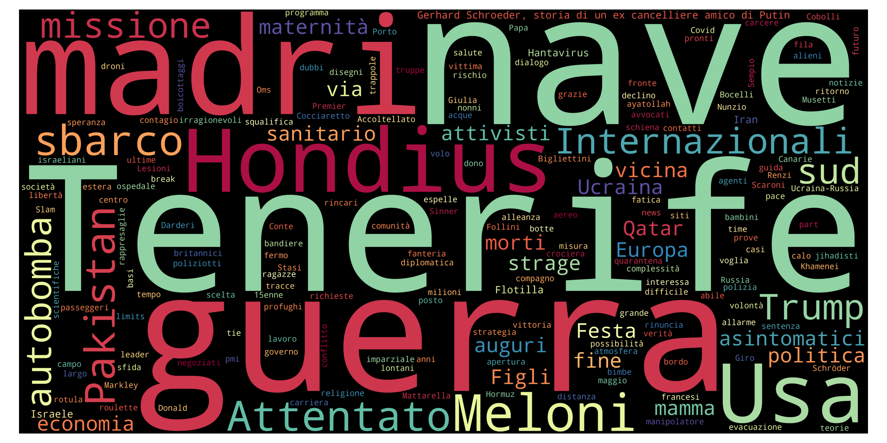
| Term | Frequency |
|---|---|
| nave | 10 |
| guerra | 7 |
| tenerife | 7 |
| iran | 7 |
| madre | 6 |
| usa | 5 |
| trump | 4 |
| giuli | 4 |
| mosca | 4 |
| festa | 3 |
| Term | Frequency |
|---|---|
| serie a | 3 |
| cittadino francese | 2 |
| ministero della cultura | 2 |
| mv hondius | 2 |
| gerhard schroeder storia ex cancelliere amico putin | 2 |
| Term | Current day frequency |
|---|---|
| nave | 10 |
| tenerife | 7 |
| madre | 6 |
| giuli | 4 |
| attentato | 3 |
| serie a | 3 |
| via | 3 |
| tracollo | 2 |
| gerhard schroeder storia ex cancelliere amico putin | 2 |
| cittadino francese | 2 |
| Term | Difference | Current day frequency | Previous day frequency |
|---|---|---|---|
| guerra | 2 | 7 | 5 |
| risposta | 2 | 3 | 1 |
| iran | 2 | 7 | 5 |
| giro | 2 | 3 | 1 |
| papa | 1 | 2 | 1 |
| politica | 1 | 2 | 1 |
| sfida | 1 | 2 | 1 |
| vicino | 1 | 2 | 1 |
| fine | 1 | 2 | 1 |
| festa | 1 | 3 | 2 |
| Term | Difference | Current day frequency | Previous day frequency |
|---|---|---|---|
| trump | -4 | 4 | 8 |
| conflitto | -3 | 1 | 4 |
| hantavirus | -3 | 2 | 5 |
| mattarella | -2 | 1 | 3 |
| volo | -2 | 1 | 3 |
| sempio | -2 | 1 | 3 |
| ucraina | -2 | 3 | 5 |
| passeggero | -2 | 1 | 3 |
| israele | -1 | 2 | 3 |
| sinner | -1 | 1 | 2 |
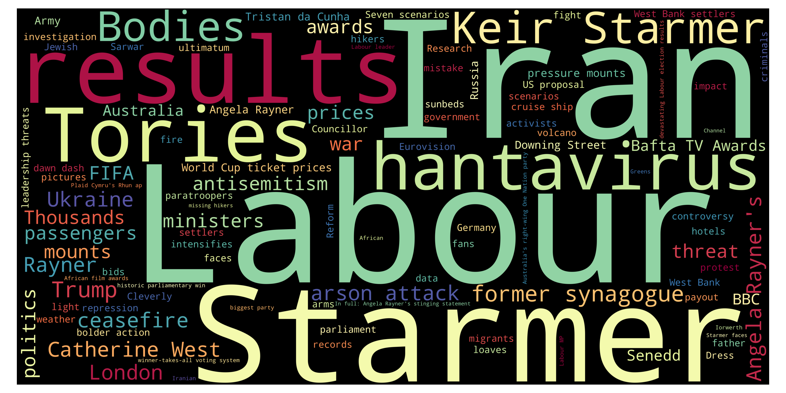
| Term | Frequency |
|---|---|
| iran | 10 |
| labour | 10 |
| starmer | 9 |
| result | 7 |
| hantavirus | 6 |
| body | 5 |
| trump | 5 |
| ceasefire | 4 |
| london | 4 |
| tories | 4 |
| Term | Frequency |
|---|---|
| keir starmer | 6 |
| former synagogue | 5 |
| arson attack | 4 |
| catherine west | 4 |
| angela rayners | 4 |
| bafta tv awards | 3 |
| cup ticket prices | 3 |
| tristan da cunha | 3 |
| pressure mounts | 3 |
| angela rayner | 3 |
| Term | Current day frequency |
|---|---|
| hantavirus | 6 |
| keir starmer | 6 |
| trump | 5 |
| former synagogue | 5 |
| rayner | 4 |
| tories | 4 |
| angela rayners | 4 |
| ceasefire | 4 |
| catherine west | 4 |
| arson attack | 4 |
| Term | Difference | Current day frequency | Previous day frequency |
|---|---|---|---|
| iran | 4 | 10 | 6 |
| body | 3 | 5 | 2 |
| thousand | 2 | 3 | 1 |
| ukraine | 2 | 4 | 2 |
| threat | 2 | 3 | 1 |
| passenger | 2 | 3 | 1 |
| russia | 1 | 3 | 2 |
| record | 1 | 2 | 1 |
| australia | 1 | 3 | 2 |
| fight | 1 | 2 | 1 |
| Term | Difference | Current day frequency | Previous day frequency |
|---|---|---|---|
| labour | -11 | 10 | 21 |
| reform | -8 | 2 | 10 |
| labour mp | -4 | 2 | 6 |
| starmer | -4 | 9 | 13 |
| result | -3 | 7 | 10 |
| china | -2 | 2 | 4 |
| control | -2 | 1 | 3 |
| police | -1 | 1 | 2 |
| politic | -1 | 3 | 4 |
| farage | -1 | 1 | 2 |
| Term | Frequency |
|---|---|
| putin | 10 |
| trump | 8 |
| guerra | 5 |
| hantavirus | 5 |
| mosca | 5 |
| ucraina | 5 |
| usa | 5 |
| iran | 5 |
| premier | 4 |
| conflitto | 4 |
| Term | Frequency |
|---|---|
| unione europea | 2 |
| piazza rossa | 2 |
| fondi pubblici | 2 |
| repubblica dominicana | 2 |
| ogni giorno | 2 |
| dialogo franco | 2 |
| stato usa | 2 |
| Term | Current day frequency |
|---|---|
| putin | 10 |
| roma | 4 |
| conflitto | 4 |
| ungheria | 3 |
| volo | 3 |
| magyar | 3 |
| meloni | 3 |
| paese | 3 |
| ministero | 3 |
| termine | 3 |
| Term | Difference | Current day frequency | Previous day frequency |
|---|---|---|---|
| trump | 6 | 8 | 2 |
| hantavirus | 3 | 5 | 2 |
| mattarella | 2 | 3 | 1 |
| guerra | 2 | 5 | 3 |
| mosca | 2 | 5 | 3 |
| ucraina | 2 | 5 | 3 |
| segreto | 2 | 3 | 1 |
| passeggero | 2 | 3 | 1 |
| pronto | 1 | 2 | 1 |
| avvistamento | 1 | 2 | 1 |
| Term | Difference | Current day frequency | Previous day frequency |
|---|---|---|---|
| usa | -9 | 5 | 14 |
| rubio | -6 | 1 | 7 |
| papa | -5 | 1 | 6 |
| primo | -3 | 2 | 5 |
| disgelo | -3 | 1 | 4 |
| interesse | -3 | 1 | 4 |
| documento | -2 | 2 | 4 |
| euro | -2 | 1 | 3 |
| maggio | -2 | 1 | 3 |
| anno | -1 | 3 | 4 |
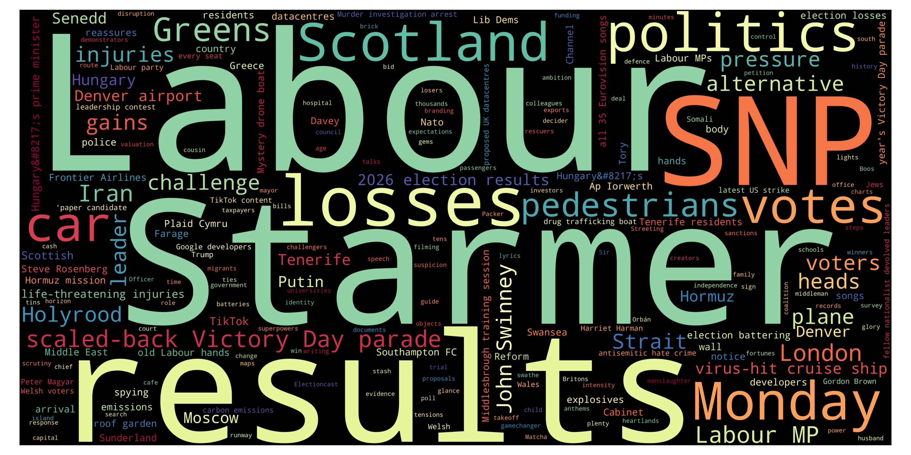
| Term | Frequency |
|---|---|
| labour | 21 |
| starmer | 13 |
| reform | 10 |
| result | 10 |
| monday | 7 |
| gain | 7 |
| snp | 7 |
| iran | 6 |
| car | 5 |
| london | 5 |
| Term | Frequency |
|---|---|
| labour mp | 6 |
| john swinney | 4 |
| election results | 4 |
| challenge starmer | 3 |
| nottinghamshire town | 3 |
| plaid cymru | 3 |
| town centre | 3 |
| scaled victory parade | 3 |
| election battering | 2 |
| labour mps | 2 |
| Term | Current day frequency |
|---|---|
| monday | 7 |
| labour mp | 6 |
| tiktok | 4 |
| putin | 4 |
| cabinet | 4 |
| plaid cymru | 3 |
| nottinghamshire town | 3 |
| control | 3 |
| hungary | 3 |
| pedestrian | 3 |
| Term | Difference | Current day frequency | Previous day frequency |
|---|---|---|---|
| reform | 5 | 10 | 5 |
| starmer | 5 | 13 | 8 |
| snp | 4 | 7 | 3 |
| car | 3 | 5 | 2 |
| london | 2 | 5 | 3 |
| strait | 2 | 3 | 1 |
| labour | 2 | 21 | 19 |
| john swinney | 2 | 4 | 2 |
| vote | 2 | 4 | 2 |
| china | 2 | 4 | 2 |
| Term | Difference | Current day frequency | Previous day frequency |
|---|---|---|---|
| result | -17 | 10 | 27 |
| election results | -7 | 4 | 11 |
| loss | -4 | 4 | 8 |
| politic | -4 | 4 | 8 |
| court | -4 | 1 | 5 |
| map | -4 | 1 | 5 |
| iran | -4 | 6 | 10 |
| wales | -3 | 2 | 5 |
| thousand | -3 | 1 | 4 |
| chart | -3 | 1 | 4 |
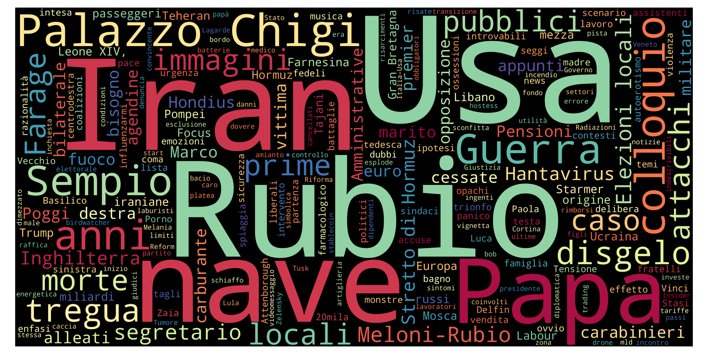
| Term | Frequency |
|---|---|
| usa | 14 |
| rubio | 7 |
| papa | 6 |
| iran | 6 |
| primo | 5 |
| premier | 4 |
| caso | 4 |
| anno | 4 |
| interesse | 4 |
| documento | 4 |
| Term | Frequency |
|---|---|
| palazzo chigi | 5 |
| gran bretagna | 3 |
| meloni rubio | 3 |
| stretto di hormuz | 3 |
| dialogo franco | 2 |
| interessi nazionali | 2 |
| Term | Current day frequency |
|---|---|
| primo | 5 |
| palazzo chigi | 5 |
| documento | 4 |
| premier | 4 |
| interesse | 4 |
| disgelo | 4 |
| colloquio | 4 |
| euro | 3 |
| meloni rubio | 3 |
| alleato | 3 |
| Term | Difference | Current day frequency | Previous day frequency |
|---|---|---|---|
| usa | 11 | 14 | 3 |
| rubio | 5 | 7 | 2 |
| pubblico | 3 | 4 | 1 |
| maggio | 2 | 3 | 1 |
| papa | 2 | 6 | 4 |
| focus | 1 | 2 | 1 |
| tregua | 1 | 3 | 2 |
| sempio | 1 | 3 | 2 |
| caccia | 1 | 2 | 1 |
| dazio | 1 | 2 | 1 |
| Term | Difference | Current day frequency | Previous day frequency |
|---|---|---|---|
| nave | -5 | 3 | 8 |
| hondius | -3 | 2 | 5 |
| europa | -3 | 4 | 7 |
| mattarella | -3 | 1 | 4 |
| passeggero | -3 | 1 | 4 |
| crociera | -3 | 1 | 4 |
| hantavirus | -2 | 2 | 4 |
| trump | -2 | 2 | 4 |
| punto | -2 | 1 | 3 |
| politica | -2 | 1 | 3 |
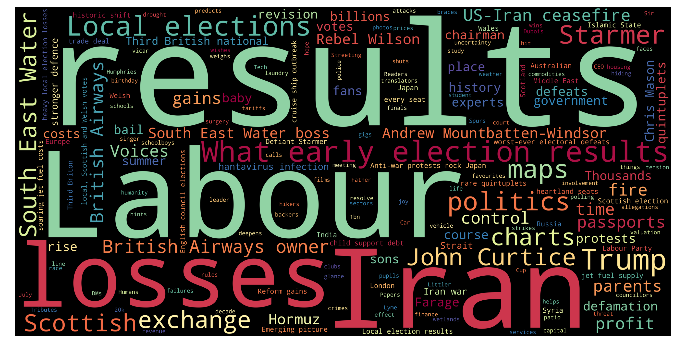
| Term | Frequency |
|---|---|
| result | 27 |
| labour | 19 |
| iran | 10 |
| gain | 9 |
| politic | 8 |
| loss | 8 |
| starmer | 8 |
| map | 5 |
| court | 5 |
| trump | 5 |
| Term | Frequency |
|---|---|
| election results | 11 |
| andrew mountbatten windsor | 6 |
| local elections | 6 |
| council elections | 4 |
| iran war | 3 |
| historic shift | 3 |
| reform election gains | 3 |
| reform gains | 3 |
| john curtice | 3 |
| nigel farage | 3 |
| Term | Current day frequency |
|---|---|
| election results | 11 |
| loss | 8 |
| politic | 8 |
| andrew mountbatten windsor | 6 |
| reform | 5 |
| map | 5 |
| european | 4 |
| senedd | 4 |
| thousand | 4 |
| chart | 4 |
| Term | Difference | Current day frequency | Previous day frequency |
|---|---|---|---|
| result | 24 | 27 | 3 |
| labour | 17 | 19 | 2 |
| gain | 8 | 9 | 1 |
| starmer | 7 | 8 | 1 |
| greens | 3 | 4 | 1 |
| europe | 2 | 4 | 2 |
| iran | 1 | 10 | 9 |
| wall | 1 | 2 | 1 |
| pressure | 1 | 2 | 1 |
| iran war | 1 | 3 | 2 |
| Term | Difference | Current day frequency | Previous day frequency |
|---|---|---|---|
| scotland | -3 | 3 | 6 |
| rape | -2 | 1 | 3 |
| ukraine | -2 | 2 | 4 |
| voter | -2 | 2 | 4 |
| history | -1 | 1 | 2 |
| wales | -1 | 5 | 6 |
| china | -1 | 2 | 3 |
| jewish | -1 | 2 | 3 |
| boss | -1 | 1 | 2 |
| vote | -1 | 2 | 3 |
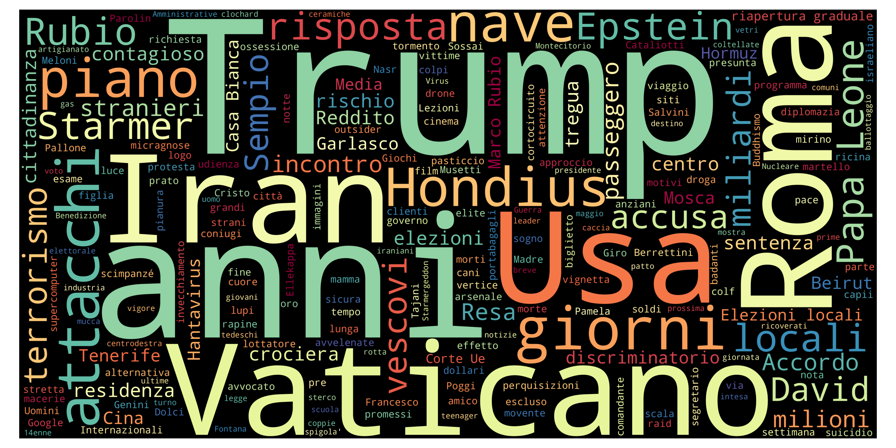
| Term | Frequency |
|---|---|
| nave | 8 |
| roma | 8 |
| europa | 7 |
| hondius | 5 |
| iran | 5 |
| papa | 4 |
| pace | 4 |
| trump | 4 |
| mattarella | 4 |
| passeggero | 4 |
| Term | Frequency |
|---|---|
| corte ue | 3 |
| santa sede | 2 |
| relazioni solide | 2 |
| nessuna indulgenza | 2 |
| chiara poggi | 2 |
| gianni cervetti | 2 |
| casa bianca | 2 |
| elezioni locali | 2 |
| istituzioni europee | 2 |
| lue pi | 1 |
| Term | Current day frequency |
|---|---|
| europa | 7 |
| hondius | 5 |
| starmer | 3 |
| europeo | 3 |
| discriminatorio | 3 |
| giovane | 3 |
| politica | 3 |
| epstein | 3 |
| leone | 3 |
| razzo | 3 |
| Term | Difference | Current day frequency | Previous day frequency |
|---|---|---|---|
| roma | 6 | 8 | 2 |
| punto | 2 | 3 | 1 |
| mattarella | 2 | 4 | 2 |
| ministro | 2 | 3 | 1 |
| miliardo | 2 | 3 | 1 |
| passeggero | 2 | 4 | 2 |
| milione | 2 | 3 | 1 |
| nave | 1 | 8 | 7 |
| tregua | 1 | 2 | 1 |
| pace | 1 | 4 | 3 |
| Term | Difference | Current day frequency | Previous day frequency |
|---|---|---|---|
| trump | -7 | 4 | 11 |
| anno | -6 | 3 | 9 |
| scuola | -3 | 1 | 4 |
| meloni | -3 | 3 | 6 |
| immagine | -2 | 1 | 3 |
| usa | -2 | 3 | 5 |
| hantavirus | -2 | 4 | 6 |
| auto | -1 | 1 | 2 |
| drone | -1 | 1 | 2 |
| mediaset | -1 | 2 | 3 |
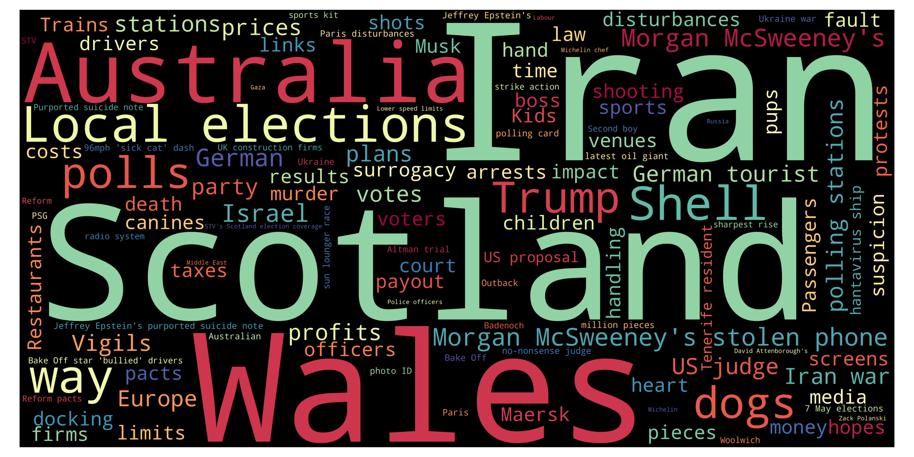
| Term | Frequency |
|---|---|
| iran | 9 |
| wales | 6 |
| scotland | 6 |
| australia | 5 |
| superdry | 4 |
| plan | 4 |
| fame | 4 |
| court | 4 |
| party | 4 |
| voter | 4 |
| Term | Frequency |
|---|---|
| local elections | 6 |
| james holder | 5 |
| ukraine war | 4 |
| founder james holder | 4 |
| morgan mcsweeneys | 4 |
| polling stations | 3 |
| ian watkins | 3 |
| health agency | 2 |
| cruise ship | 2 |
| russia victory parade | 2 |
| Term | Current day frequency |
|---|---|
| scotland | 6 |
| australia | 5 |
| james holder | 5 |
| fame | 4 |
| morgan mcsweeneys | 4 |
| superdry | 4 |
| founder james holder | 4 |
| ukraine war | 4 |
| right | 4 |
| dog | 3 |
| Term | Difference | Current day frequency | Previous day frequency |
|---|---|---|---|
| poll | 3 | 4 | 1 |
| wales | 3 | 6 | 3 |
| voter | 2 | 4 | 2 |
| vote | 2 | 3 | 1 |
| result | 2 | 3 | 1 |
| hand | 2 | 3 | 1 |
| hope | 1 | 2 | 1 |
| fear | 1 | 2 | 1 |
| time | 1 | 2 | 1 |
| jewish | 1 | 3 | 2 |
| Term | Difference | Current day frequency | Previous day frequency |
|---|---|---|---|
| trump | -5 | 4 | 9 |
| starmer | -4 | 1 | 5 |
| labour | -3 | 2 | 5 |
| deal | -3 | 1 | 4 |
| local elections | -3 | 6 | 9 |
| greens | -2 | 1 | 3 |
| price | -2 | 1 | 3 |
| child | -2 | 1 | 3 |
| death | -2 | 2 | 4 |
| family | -2 | 2 | 4 |
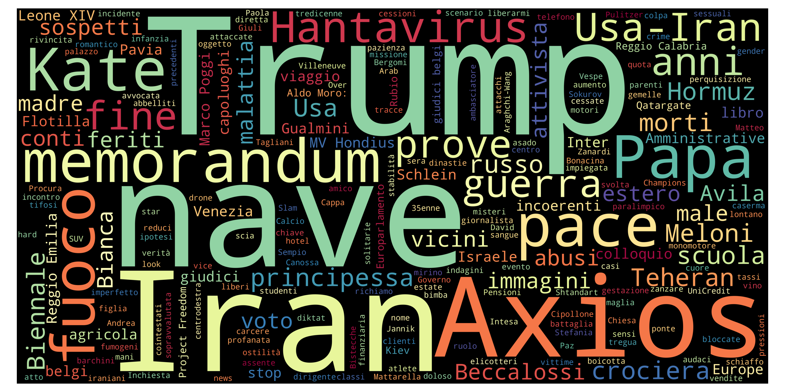
| Term | Frequency |
|---|---|
| trump | 11 |
| anno | 9 |
| nave | 7 |
| meloni | 6 |
| hantavirus | 6 |
| iran | 6 |
| mostra | 5 |
| cnn | 5 |
| usa | 5 |
| caso | 4 |
| Term | Frequency |
|---|---|
| ted turner | 3 |
| leone xiv | 3 |
| paolo massa | 3 |
| assemblea costituente | 3 |
| marco poggi | 2 |
| reggio calabria | 2 |
| project freedom | 2 |
| aldo moro | 2 |
| giudici belgi | 2 |
| iran usa | 2 |
| Term | Current day frequency |
|---|---|
| nave | 7 |
| mostra | 5 |
| cnn | 5 |
| crociera | 4 |
| hormuz | 4 |
| scuola | 4 |
| papa | 4 |
| minetti | 3 |
| principessa | 3 |
| causa | 3 |
| Term | Difference | Current day frequency | Previous day frequency |
|---|---|---|---|
| anno | 6 | 9 | 3 |
| meloni | 3 | 6 | 3 |
| iran | 3 | 6 | 3 |
| russo | 3 | 4 | 1 |
| usa | 2 | 5 | 3 |
| pace | 2 | 3 | 1 |
| biennale | 2 | 4 | 2 |
| auto | 1 | 2 | 1 |
| passeggero | 1 | 2 | 1 |
| ferito | 1 | 2 | 1 |
| Term | Difference | Current day frequency | Previous day frequency |
|---|---|---|---|
| morto | -5 | 2 | 7 |
| cattolico | -5 | 1 | 6 |
| attacco | -4 | 1 | 5 |
| pericolo | -4 | 1 | 5 |
| uomo | -3 | 1 | 4 |
| guerra | -2 | 2 | 4 |
| venezia | -2 | 2 | 4 |
| governo | -2 | 1 | 3 |
| carcere | -2 | 1 | 3 |
| fuoco | -2 | 4 | 6 |
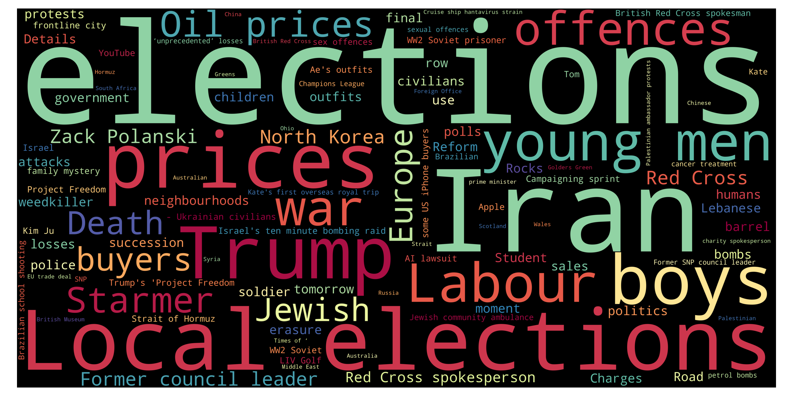
| Term | Frequency |
|---|---|
| election | 15 |
| iran | 11 |
| trump | 9 |
| plan | 5 |
| cnn | 5 |
| ukraine | 5 |
| labour | 5 |
| starmer | 5 |
| deal | 4 |
| court | 4 |
| Term | Frequency |
|---|---|
| local elections | 9 |
| oil prices | 3 |
| ted turner | 3 |
| north korea | 3 |
| young men | 3 |
| middle east | 3 |
| alaska megatsunami | 2 |
| political parties | 2 |
| final pitches | 2 |
| iran war | 2 |
| Term | Current day frequency |
|---|---|
| ukraine | 5 |
| cnn | 5 |
| family | 4 |
| death | 4 |
| megatsunami | 4 |
| court | 4 |
| russia | 3 |
| young men | 3 |
| price | 3 |
| boy | 3 |
| Term | Difference | Current day frequency | Previous day frequency |
|---|---|---|---|
| election | 10 | 15 | 5 |
| local elections | 7 | 9 | 2 |
| trump | 7 | 9 | 2 |
| plan | 4 | 5 | 1 |
| deal | 2 | 4 | 2 |
| starmer | 2 | 5 | 3 |
| party | 2 | 3 | 1 |
| reform | 2 | 4 | 2 |
| concern | 2 | 3 | 1 |
| hormuz | 2 | 3 | 1 |
| Term | Difference | Current day frequency | Previous day frequency |
|---|---|---|---|
| job | -3 | 1 | 4 |
| iran war | -2 | 2 | 4 |
| school | -2 | 1 | 3 |
| labour | -1 | 5 | 6 |
| fear | -1 | 1 | 2 |
| passenger | -1 | 2 | 3 |
| use | -1 | 1 | 2 |
| cost | -1 | 2 | 3 |
| cut | -1 | 1 | 2 |
| line | -1 | 1 | 2 |